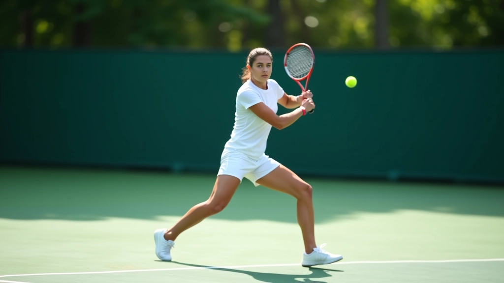
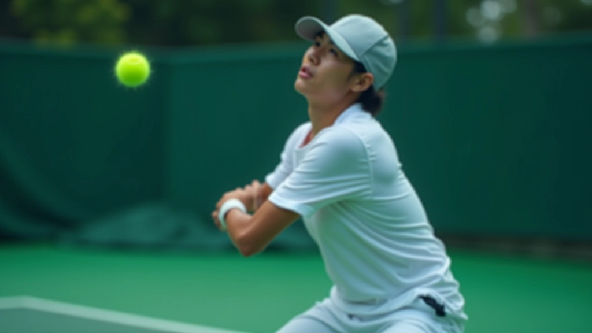
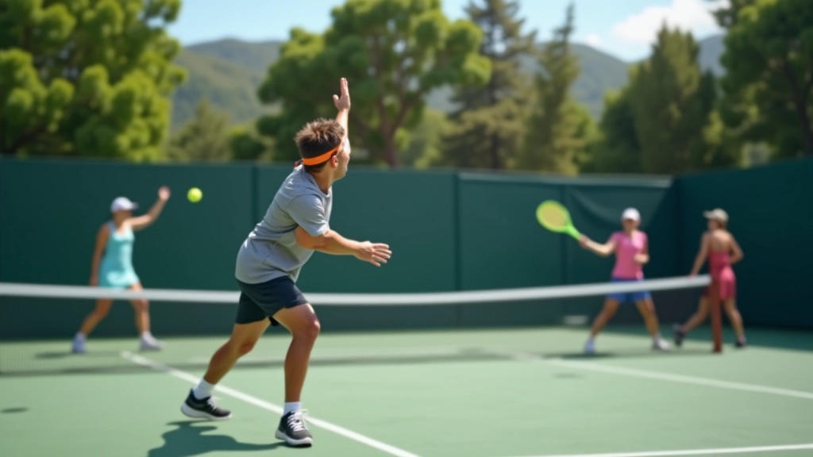

إتقان الضربة الطائرة: التقنية الأساسية والخطوات العملية
شرح مفصل لكيفية تطوير الضربة الطائرة من الصفر — بدءًا من موضع القدمين وحتى المتابعة الصحيحة للكرة

لماذا الضربة الطائرة مهمة جدًا؟
الضربة الطائرة ليست مجرد حركة إضافية في التنس — هي أداة هجومية قوية تختصر المسافات وتنهي اللقطات بسرعة. عندما تتقن هذه الضربة، تصبح لديك ميزة حقيقية على الملعب.
المشكلة أن معظم المبتدئين يتعاملون معها كحركة ثانوية. لكن الحقيقة أن إتقانها يتطلب تركيزًا مستمرًا على التفاصيل الصغيرة — موضع القدمين، زاوية المضرب، توقيت الضربة. في هذا الدليل، نشرح كل شيء خطوة بخطوة.
التركيز
المراقبة المستمرة للكرة من اللحظة الأولى
الخطوات
حركات قدم سريعة ودقيقة لتوضيح الموضع
المضرب
إمساك قوي مع حفظ مرونة الرسغ
موضع القدمين والتوازن
كل شيء يبدأ من الأرض. موضع قدميك يحدد قوتك واستقرارك عند الضربة. لا يمكنك أن تضرب كرة قوية وأنت غير متوازن.
المسافة بين القدمين يجب أن تكون بعرض الكتفين تقريبًا. الوزن يوزع بشكل متساوٍ على الكرتين. عندما ترى الكرة قادمة نحوك، خذ خطوة صغيرة بالقدم البعيدة عن الكرة — هذا يساعدك على التحرك بسرعة والوقوف في الموضع الصحيح.
قف بموازاة الخط
جسدك متجه نحو الشبكة مباشرة، كتفاك متوازيان مع خط الملعب
اثني ركبتيك قليلاً
هذا يعطيك مرونة أكثر والقدرة على التحرك في أي اتجاه بسرعة
حافظ على توازن جسدك
معظم وزنك على أصابع قدميك، ليس على الكعب


حركة الذراع والمضرب
الآن وقد ضبطت موضع قدميك، نركز على الذراع والمضرب. هنا يحدث السحر — أو الكارثة إذا لم تكن الحركة صحيحة.
أول شيء: امسك المضرب بقوة لكن ليس بتوتر زائد. الرسغ مرن قليلاً — هذا يعطيك التحكم والدقة. المضرب يجب أن يكون في مستوى الكتف تقريبًا، مع زاوية حوالي 45 درجة من الأفقي.
عندما تقترب الكرة، لا تسحب المضرب للخلف بشكل كبير — الضربة الطائرة حركة قصيرة وسريعة. ادفع المضرب للأمام بشكل مباشر نحو الكرة، وليس لأعلى أو لأسفل. هذا يعطيك التحكم الأفضل.
توقيت الضربة والاتصال بالكرة
التوقيت هو كل شيء في الضربة الطائرة. إذا ضربت الكرة في اللحظة الخاطئة، ستذهب الكرة إلى أي مكان إلا حيث تريد.
حاول أن تضرب الكرة في أعلى نقطة لها، قبل أن تبدأ بالنزول. هذا يعطيك زاوية أفضل وتحكم أكثر. اتصل بالكرة أمام جسدك مباشرة، ليس بجانبك — هذا مهم جدًا للدقة.
نصيحة سريعة
راقب الكرة طوال الطريق حتى لحظة الاتصال. لا تنظر للشبكة أو للنقطة التي تريد أن تسدد فيها — ركز على الكرة فقط. هذا يحسّن دقتك بشكل كبير.
معلومة مهمة
هذا الدليل يقدم إرشادات تعليمية عامة حول تقنية الضربة الطائرة في التنس. كل لاعب له احتياجات مختلفة وأسلوب شخصي. إذا كنت مبتدئًا تمامًا، من الأفضل العمل مع مدرب متخصص يمكنه تقويم حركاتك والتأكد من أنك تتعلم بالطريقة الصحيحة من البداية.

المتابعة والانتقال للضربة التالية
بعد أن تضرب الكرة، لا تقف في نفس المكان. المتابعة مهمة جدًا — تحرك للأمام قليلاً بعد الضربة لتكون جاهزًا للرد على أي رد من الخصم.
الحركة الطبيعية للمضرب بعد الضربة تأتي بشكل تلقائي — دع جسدك يتحرك بسلاسة. لا تتوقف أو تنتظر. بدلاً من ذلك، عد سريعًا إلى وضعية الاستعداد وكن مستعدًا للكرة التالية. في لعبة سريعة مثل التنس، الثواني القليلة تحدث فرقًا كبيرًا.
تدرب على هذا الانتقال من الضربة إلى الاستعداد عشرات المرات. مع الممارسة، ستصبح هذه الحركات تلقائية تمامًا، وستتمكن من التركيز على مكان إرسال الكرة بدلاً من القلق حول الحركات التقنية.
الخطوات التالية
تعلم الضربة الطائرة يتطلب صبرًا والتزامًا. لا تتوقع أن تصبح خبيرًا في أسبوع — هذا لا يحدث. لكن إذا مارست بانتظام، ركزت على التفاصيل الصغيرة، وتلقيت ملاحظات من مدرب أو لاعبين أكثر خبرة، ستلاحظ تحسنًا حقيقيًا في غضون 6-8 أسابيع.
ابدأ بالأساسيات — موضع القدمين، توازن الجسد، إمساك المضرب. بعد أن تتقن هذه، ركز على توقيت الضربة والاتصال بالكرة. مع الممارسة المستمرة، كل هذه الأشياء ستصبح طبيعية وستتمكن من التركيز على الاستراتيجية والحركة على الملعب.
هل تريد تحسين مهاراتك أكثر؟ اكتشف المزيد عن التمارين الفعالة والاستراتيجيات المتقدمة.
اقرأ دليل التمارين
فريق شبكة الضربة الطائرة التحريري
فريق المراجعة والتحرير
كتبه فريق شبكة الضربة الطائرة التحريري، المركز على تقديم إرشادات عملية وسهلة المتابعة.
مقالات ذات صلة

الاقتراب من الشبكة: التحرك الصحيح والتوقيت المثالي
تعلم كيفية الاقتراب الآمن والفعال من الشبكة مع الحفاظ على توازنك وجاهزيتك للرد...

تمارين فعالة لتحسين الضربة الطائرة والتركيز
مجموعة من التمارين العملية التي تقوي دقة ضربتك الطائرة وسرعة استجابتك عند الشبكة...

الاستراتيجية الشاملة: دمج الضربة الطائرة والاقتراب في خطة اللعب
فهم كيفية دمج الضربة الطائرة والاقتراب من الشبكة كجزء من استراتيجية هجومية متكاملة...